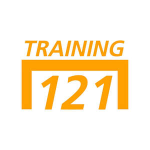

Trade Mark Journal No.2025/044 31 October 2025
UK00004281465 21 October 2025 (9,25,41,42)

- Class 9
- Downloadable electronic publications, namely e-books, guides, and videos in the field of supplemental football training; football training software; football simulation training software; football training guides in electronic format; downloadable videos featuring football drills; training exercises for football; football tactical instruction guides; performance improvement guides and videos; downloadable software and mobile applications for football training programs; training software for drills and exercises which involve player development and physical conditioning; downloadable multimedia files containing instructional audio and video content related to football skills development, strategy, and fitness; virtual and augmented reality football training software; downloadable podcasts and multimedia content related to football drills and tactics.
- Class 25
- Sports Clothing, namely football training tops, jerseys, shorts, trousers, tracksuits, hoodies, jackets, compression garments, and base layers; football clothing, namely shirts, pants, jackets, footwear, hats, and training kits; sportswear and training wear for football players; footwear; socks; headwear; hats and caps; branded merchandise for casual wear and football.
- Class 41
- Providing football training; football coaching; organising and providing football training, football skills classes, and fitness programs for football players; educational services and clinics relating to football, namely football tactics, physical conditioning, and player development; arranging and providing football workshops and training camps; providing summer camps and seasonal football programs; online and in-person football coaching services; providing non downloadable software and digital content related to football skills development, strategy, and fitness; conducting virtual and online coaching sessions, classes, webinars and courses; accreditation and certification services relating to sports coaches; accreditation of professional competency; accreditation [certifying] of educational achievement; arranging, conducting and organisation of football competitions, events and tournaments; arranging, conducting and organisation of sports competitions, events and tournaments; staging of sports tournaments.
- Class 42
- Software as a service (SAAS) services featuring software related to football skills development, strategy and fitness .
GMG TRAINING121 LIMITED
Representative: Maclachlan IP